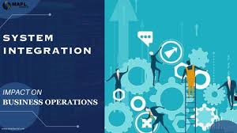
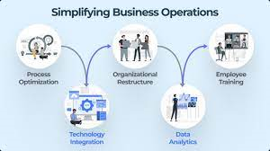

Information System Integration in a Business
Within an organisation, information system integration refers to the smooth interaction and cooperation of various databases, IT systems, and software programmes. For an operational structure to be comprehensive, effective, and efficient, these systems must be integrated
Better Departmental and Cross-Departmental Collaboration
Better Departmental and Cross-Departmental Collaboration: Integrated information systems make it easier for data to move between departments within a company. Data silos are less common as a result of this connectedness, which also improves teamwork, communication, and knowledge sharing. For example, sales and marketing teams can operate more productively by combining marketing automation solutions with customer relationship management (CRM) systems.
Simplifying Business Processes
Simplifying Business Processes: By guaranteeing that data moves seamlessly between different software programmes, system integration removes duplication and inconsistencies. It expedites procedures, minimises errors, and reduces the need for manual intervention. One example of how inventory management software and enterprise resource planning (ERP) systems can work together to reduce stockouts and overstock situations is by preserving correct and up-to-date inventory data.
Improving Decision-Making
Improving Decision-Making: An organization-wide, integrated picture of data is made possible by integrated systems. This gives accurate and current information, which helps with decision-making. Based on real-time insights from integrated data sources, organisations can make well-informed strategic decisions.
In today's changing business environment, an organisation's ability to optimise operations, improve communication, and streamline decision-making processes is critical to its increased efficiency and competitiveness.